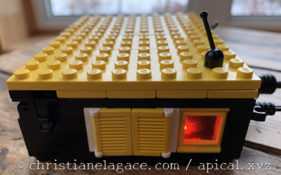
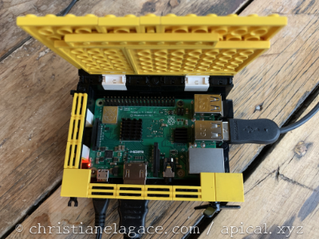

13. L'unité centrale du système domotique (Raspberry Pi)¶
13.1 Boîtes domotiques commerciales¶
Il existe une quantité phénoménale de boîtes domotiques commerciales. Certaines offrent des fonctionnalités limitées, notamment au niveau des protocoles de communication supportés, alors que d'autres sont plus versatiles.
Ces appareils sont des boîtes domotiques complètes (hub). Ils combinent donc l'unité centrale ainsi que le logiciel de domotique et la passerelle.
Remarquez que je n'ai pas testé toutes ces boîtes domotiques. Je vous fais simplement un résumé d'informations trouvées au fil de mes recherches.
SmartThings de Samsung¶
La boîte domotique SmartThings supporte plusieurs protocoles : Wi-Fi, Bluetooth, Zigbee, Z-Wave. Ceci lui permet de contrôler un nombre impressionnant d'appareils de domotique. Par contre, elle ne peut pas contrôler les appareils Nest.
Néanmoins, la boîte SmartThings est plutôt intéressante pour monter un petit système domotique à la maison.
Vera¶
Offerte dans différentes version : Vera Edge, Vera Plus et Vera Secure, cette boîte domotique supporte Z-Wave, Zigbee, Bluetooth et Wi-Fi.
Ezlo Atom¶
Toute petite boîte domotique qui se branche directement dans une prise de courant. Elle a gagné le 2020 IoT Breakthrough Award.
Hubitat Elevation¶
Cet appareil est très versatile au niveau des protocoles de communication : Zigbee, Z-Wave et Wi-Fi. Supporte IFTTT. Son interface est complexe mais offre plus de possibilités.
Wink¶
Voici une autre boîte domotique qui supporte de nombreux protocoles : Bluetooth LE, Z-wave, ZigBee, Kidde, Lutron Clear Connect.
Assistants vocaux¶
Même si leurs fonctionnalités sont limitées, les assistants vocaux d'Amazon, Google et Apple peuvent également servir de boîtes domotiques.
Echo d'Amazon (Alexa)¶
Amazon a sorti toute une gamme d'appareils Echo contrôlés par la voix à l'aide de l'assistant personnel Alexa : Echo Dot, Echo Show, Echo Plus, Echo Studio, etc.
Un appareil Echo peut contrôler certains appareils connectés via Bluetooth ou Wi-Fi. Mais pour contrôler un appareil qui utilise le protocole Z-Wave, il faudra connecter votre Echo à une autre boîte domotique compatible.
Si vous possédez un Echo Plus ou un Echo Show, vous avez probablement accès au protocole Zigbee (sur certaines versions). Malheureusement, Z-Wave n'est toujours pas supporté.
Dans le contexte où vous utilisez un appareil Echo combiné à une autre boîte domotique, votre Echo n'est pas une boîte domotique mais bien un appareil pour contrôler votre système domotique à distance, au même titre que votre téléphone ou votre montre intelligente.
Google Nest¶
Les appareils Google Nest (avant 2019, on les appelait Google Home), sont comparables aux appareils Echo d'Amazon.
Par contre, au moment d'écrire ces lignes, aucun ne supportait le protogole Zigbee. Et tout comme la famille Echo, ils ne supportaient pas non plus le Z-Wave. Il faudra donc ajouter une boîte domotique pour contrôler des appareils Zigbee ou Z-Wave, ce qui relaie Google Nest au rôle de contrôleur vocal.
HomePod d'Apple¶
Le HomePod d'Apple est une autre boîte domotique comparable aux appareils Echo d'Amazon.
Côté protocoles, il est assez limité. Il ne supporte pas Zigbee ni Z-Wave. Son étendue de protocole ressemble donc à celle des appareils Google Nest.
Le HomePod est spécialement prisé par les amateurs de musique à l'oreille fine puisqu'il offre un excellent son. Par contre, ses fonctionnalités de domotique sont limitées.
Tout comme les appareils Echo ou Google Nest, si vous désirez un système domotique plus évolué, vous devrez y ajouter une boîte domotique et utiliser le HomePod comme contrôleur vocal.
Pour plus d'information¶
« Best smart home hubs of 2022 ». Tom's Guide. https://www.tomsguide.com/us/best-smart-home-hubs,review-3200.html
13.2 Un Raspberry Pi comme unité centrale¶
Un système domotique comprend généralement plusieurs appareils (ex : lumière, serrure, thermostat, stores) qui pourront être contrôlés soit de façon automatique, soit par une action effectuée à partir d'un appareil distant comme un téléphone intelligent ou une montre intelligente.
La boîte domotique du système peut être un ordinateur ou une carte électronique spécialisée. Elle n'a pas besoin de beaucoup de puissance et elle doit idéalement être peu gourmande en énergie. C'est pourquoi le Raspberry Pi est un excellent choix.
Attention : le Raspberry Pi Zero n'offre généralement pas assez de puissance pour un système domotique. Il faudra privilégier le Pi version 3 B+ ou 4.
Lors de la dernière révision de cette fiche, le coût du Raspberry Pi 4 oscillait aux alentours de CDN $200, incluant le bloc d'alimentation.
Le bloc d'alimentation doit fournir au moins 2.5A.
Idéalement, le Pi doit être combiné à un disque dur sur lequel le système d'exploitation sera installé. Mais pendant la période de test, il est possible de travailler sur une carte micro SD :
- capacité minimale de 16 Go (Raspberry Pi OS nécessite 8 Go mais vous aurez besoin d'espace supplémentaire pour stocker les données de votre système) ;
- formatée en FAT32, parfois appelé MS-DOS (FAT) ;
- de classe 10 et de bonne qualité.
Une fois la période de test du système terminée, il est important de remplacer la carte micro SD par un disque dur car la durée de vie d'une carte est relativement courte dans un environnement où il y a beaucoup d'écritures, comme avec un système domotique.
Boîtier du Raspberry Pi¶
Pour protéger votre Raspberry Pi, il est conseillé de le placer dans un boîtier spécialement conçu à cet effet.
Il est également possible de constuire un boîtier avec les matériaux de votre choix, par exemple des blocs Lego.
J'ai construit le mien (j'ai eu l'impression de retrouver mes 10 ans pendant le projet!) en m'inspirant de ceci : https://domotique34.com/blog/2012/10/18/construisez-votre-boitier-pour-le-raspberry-pi-en-lego/.
Et voici le résultat!




Remarquez la petite fenêtre qui permet de voir les DEL rouge (alimentation) et verte (accès à la carte micro SD). J'ai aussi prévu des portes pour accéder à la carte micro SD.
Une autre option s'offre à vous si vous disposez d'une imprimante 3D : imprimer votre propres boîtier. Et pas de problème si vous n'avez pas de talent de concepteur, plusieurs modèles sont disponibles sur Thingiverse (https://www.thingiverse.com/search?q=raspberry+pi+case).
Attention : si vous achetez ou imprimez un boîtier, prenez soin de choisir un modèle fait spécifiquement pour votre version du Raspberry Pi. Les connecteurs ne sont pas placés au même endroit d'une version à l'autre.
Système d'exploitation¶
Selon le logiciel de domotique choisi, vous pourriez avoir à installer le système d'exploitation Raspberry Pi OS (la version Lite, sans interface graphique, est généralement suffisante) puis y ajouter le logiciel de domotique. C'est le cas par exemple avec Jeedom et avec Domoticz.
D'autres logiciels de domotique tournent sur un système d'exploitation créé spécifiquement pour eux. C'est le cas notamment avec Home Assistant.
Notez que, selon les choix que vous ferez, vous pourriez avoir besoin d'un écran, d'un clavier pour effectuer l'installation.
13.3 Bien traiter son Raspberry Pi :-)¶
Le Raspberry Pi est un petit ordinateur alors certaines précautions s'imposent quand on le manipule.
Boîtier¶
Le Raspberry Pi doit être fixé dans un boîtier. Ceci le protégera des chocs et de la poussière en plus de vous aider à ne pas mettre vos doigts sur ses composantes électronique.

Dissipateurs thermiques¶
Il pourrait arriver que le Pi chauffe. Assurez-vous que des dissipateurs thermiques (heatsink) soient collés aux endroits appropriés. Généralement, on en place un sur le processeur, un sur la mémoire vive, un sur le contrôleur Ethernet et un autre sur le contrôleur USB.

Ventilateur¶
Il est intéressant d'ajouter un ventilateur si le boîtier le permet.
Pour que le ventilateur fonctionne à bas régime, il faut brancher le fil rouge sur la broche 3.3V (broche physique no 1,pinout) et le fil noir sur une des broches de mise à terre (broche no 6, 9, 14, 20, 25, 30, 34 ou 39).
Notez que pour que le ventilateur tourne plus vite, il suffit de brancher le fil rouge sur une broche 5V (broche no 2 ou 4).

Dans le cas où le ventilateur comporte un troisième fil, généralement bleu, ce fil doit être branché sur la broche TXD (no 8).

Câble du bloc d'alimentation¶
Évitez d'enrouler le fil du bloc d'alimentation alentour du bloc. Ceci accélère son usure et risque de casser plus rapidement les petits fils qui sont à l'intérieur.

En effet, à force de l'enrouler et de le dérouler, le fil devient complètement tordu.

Il est préférable de replier le fil sur lui-même, quitte à terminer par un tour ou deux.

Manipulation de la carte micro SD¶
Lors du retrait de la carte micro SD, tirez-la horizontalement. Si vous tentez de la tirer verticalement, vous risquez d'endommager l'unité dans laquelle la carte est insérée.

Branchements au GPIO¶
Lorsque vous effectuez des branchements au GPIO, assurez-vous que le Pi ne soit pas sous tension.

Arrêt du système d'exploitation¶
Assurez-vous d'éteindre le système de façon sécuritaire avant de débrancher le Raspberry Pi.